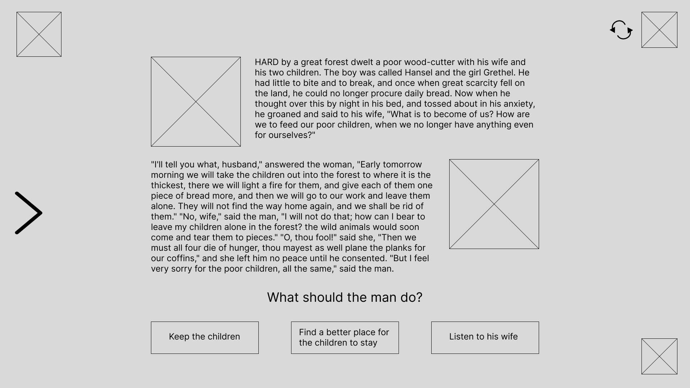
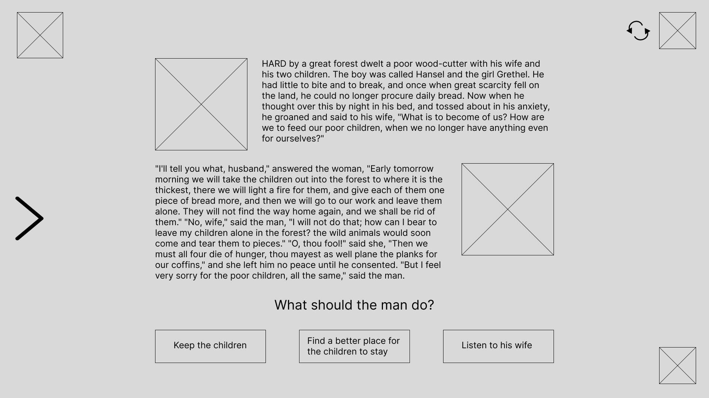
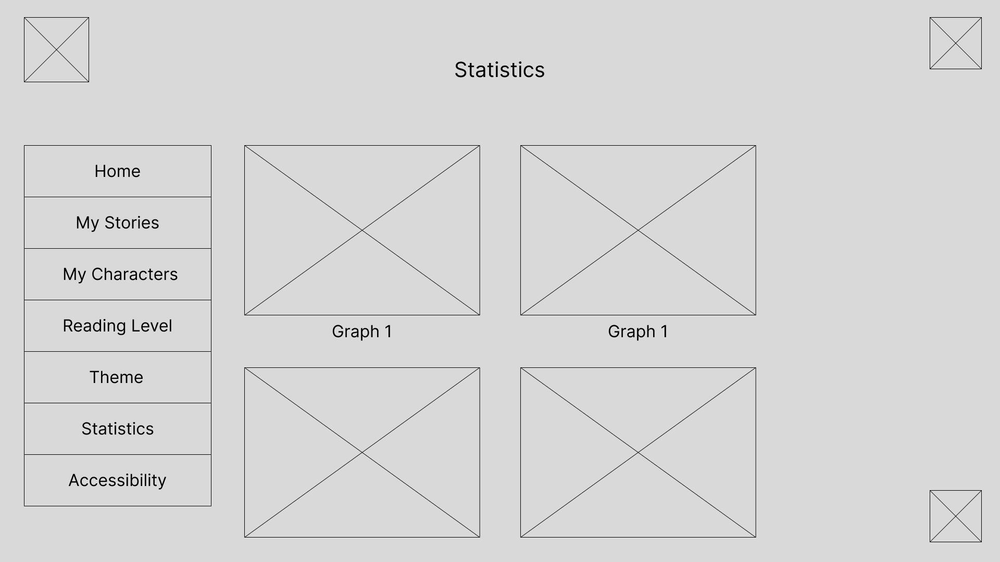
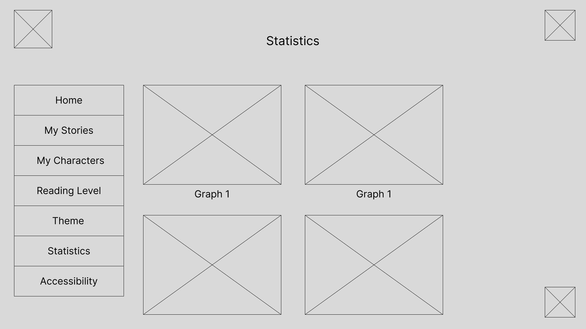
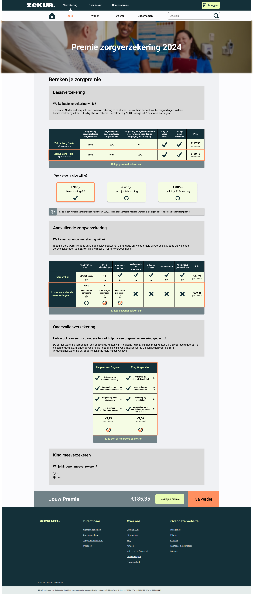
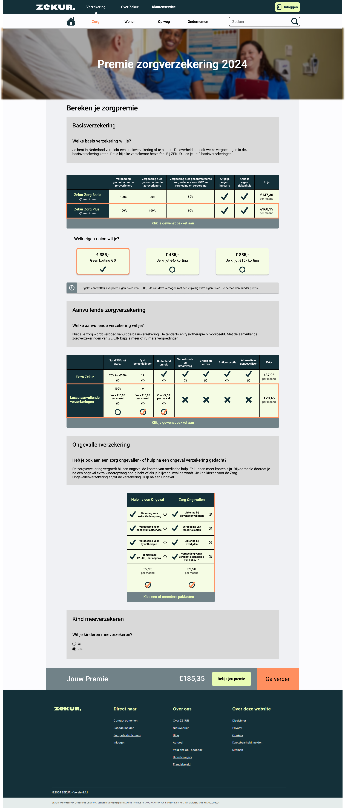
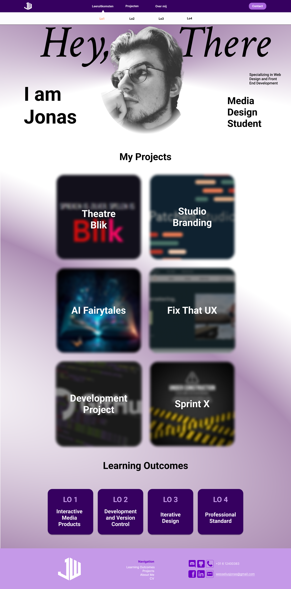
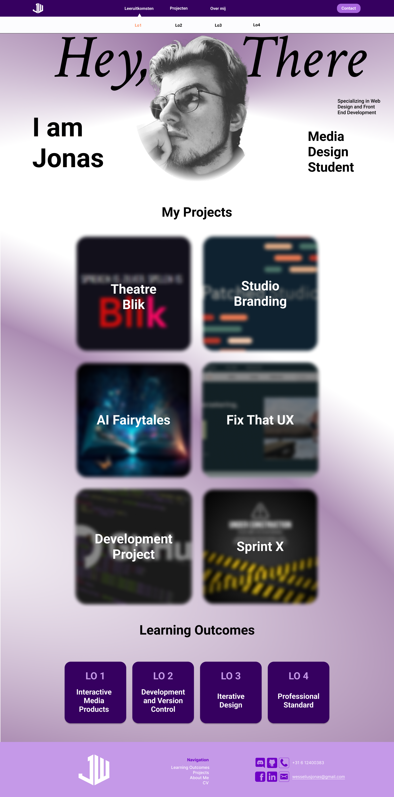

Logo Patched Studio
One of the most important steps in building our brand identity was designing the Patched Studio logo. Because we worked together, everyone was able to submit original ideas, which resulted in a thoughtful and vast design process.
- Situation: Our studio, Patched Studio, required a logo. We made the decision to work as a team, and each member came up with early logo suggestions that we all reviewed.
- Task: In order to creatively and visually portray the core values of Patched Studio, I was tasked with coming up with a couple logo options that included our studio's initials.
- Action: I started with paper drawings, experimenting with several logo concepts centered around the initials "P" and "S." I used Adobe Illustrator to polish the sketches that my peers and I liked the best after getting their input. I eventually settled on a circular shape and continued to refine it to create a simple, unified logo.
- Result: The team responded positively to my final design when I presented it to them. My logo was praised for its creative interpretation of initial-based logos and provided important inspiration for the final choice, even though we ultimately decided on a different team member's design.
- Reflection: The value of teamwork and design iteration was showcased with this task. It emphasized that the process and feedback may have a big impact on the end product and improve teamwork even if a design is not chosen.


 

 

 



 
